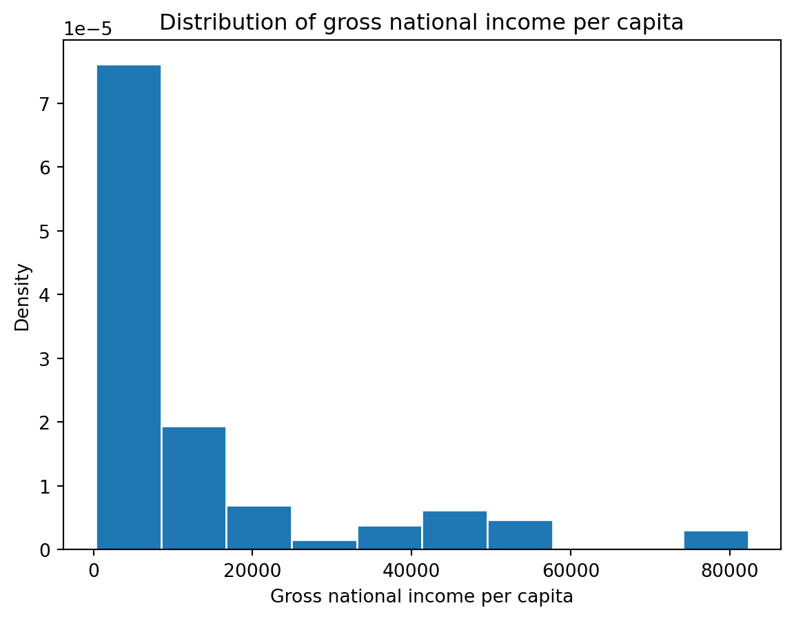

Use matplotlib and seaborn to create data visualizations.
Analyze histograms and identify the skewness, potential outliers, and the mode.
Use boxplot and violinplot to compare two distributions.
This content is covered in lecture 7.
In our journey of the data science lifecycle, we have begun to explore the vast world of exploratory data analysis. More recently, we learned how to pre-process data using various data manipulation techniques. As we work towards understanding our data, there is one key component missing in our arsenal — the ability to visualize and discern relationships in existing data.
These next two lectures will introduce you to various examples of data visualizations and their underlying theory. In doing so, we’ll motivate their importance in real-world examples with the use of plotting libraries.
7.1 Visualizations in Data 8 and Data 100 (so far)
You’ve likely encountered several forms of data visualizations in your studies. You may remember two such examples from Data 8: line plots and histograms. Each of these served a unique purpose. For example, line plots displayed how numerical quantities changed over time, while histograms were useful in understanding a variable’s distribution.
Line Chart
Histogram
7.2 Goals of Visualization
Visualizations are useful for a number of reasons. In Data 100, we consider two areas in particular:
To broaden your understanding of the data
Key part in exploratory data analysis.
Useful in investigating relationships between variables.
To communicate results/conclusions to others
Visualization theory is especially important here.
One of the most common applications of visualizations is in understanding a distribution of data.
This course note will focus on the first half of visualization topics in Data 100. The goal here is to understand how to choose the “right” plot depending on different variable types and, secondly, how to generate these plots using code.
7.3 An Overview of Distributions
A distribution describes the frequency of unique values in a variable. Distributions must satisfy two properties:
Each data point must belong to only one category.
The total frequency of all categories must sum to 100%. In other words, their total count should equal the number of values in consideration.
Not a Valid Distribution
Valid Distribution
Left Diagram: This is not a valid distribution since individuals can be associated with more than one category and the bar values demonstrate values in minutes and not probability.
Right Diagram: This example satisfies the two properties of distributions, so it is a valid distribution.
7.4 Variable Types Should Inform Plot Choice
Different plots are more or less suited for displaying particular types of variables, laid out in the diagram below:
7.5 Bar Plots
As we saw above, a bar plot is one of the most common ways of displaying the distribution of a qualitative (categorical) variable. The length of a bar plot encodes the frequency of a category; the width encodes no useful information. The color could indicate a sub-category, but this is not necessarily the case.
Let’s contextualize this in an example. We will use the World Bank dataset (wb) in our analysis.
Code
import pandas as pdimport numpy as npwb = pd.read_csv("data/world_bank.csv", index_col=0)wb.head()
Continent
Country
Primary completion rate: Male: % of relevant age group: 2015
Primary completion rate: Female: % of relevant age group: 2015
Lower secondary completion rate: Male: % of relevant age group: 2015
Lower secondary completion rate: Female: % of relevant age group: 2015
Youth literacy rate: Male: % of ages 15-24: 2005-14
Youth literacy rate: Female: % of ages 15-24: 2005-14
Adult literacy rate: Male: % ages 15 and older: 2005-14
Adult literacy rate: Female: % ages 15 and older: 2005-14
...
Access to improved sanitation facilities: % of population: 1990
Access to improved sanitation facilities: % of population: 2015
Child immunization rate: Measles: % of children ages 12-23 months: 2015
Child immunization rate: DTP3: % of children ages 12-23 months: 2015
Children with acute respiratory infection taken to health provider: % of children under age 5 with ARI: 2009-2016
Children with diarrhea who received oral rehydration and continuous feeding: % of children under age 5 with diarrhea: 2009-2016
Children sleeping under treated bed nets: % of children under age 5: 2009-2016
Children with fever receiving antimalarial drugs: % of children under age 5 with fever: 2009-2016
Tuberculosis: Treatment success rate: % of new cases: 2014
Tuberculosis: Cases detection rate: % of new estimated cases: 2015
0
Africa
Algeria
106.0
105.0
68.0
85.0
96.0
92.0
83.0
68.0
...
80.0
88.0
95.0
95.0
66.0
42.0
NaN
NaN
88.0
80.0
1
Africa
Angola
NaN
NaN
NaN
NaN
79.0
67.0
82.0
60.0
...
22.0
52.0
55.0
64.0
NaN
NaN
25.9
28.3
34.0
64.0
2
Africa
Benin
83.0
73.0
50.0
37.0
55.0
31.0
41.0
18.0
...
7.0
20.0
75.0
79.0
23.0
33.0
72.7
25.9
89.0
61.0
3
Africa
Botswana
98.0
101.0
86.0
87.0
96.0
99.0
87.0
89.0
...
39.0
63.0
97.0
95.0
NaN
NaN
NaN
NaN
77.0
62.0
5
Africa
Burundi
58.0
66.0
35.0
30.0
90.0
88.0
89.0
85.0
...
42.0
48.0
93.0
94.0
55.0
43.0
53.8
25.4
91.0
51.0
5 rows × 47 columns
We can visualize the distribution of the Continent column using a bar plot. There are a few ways to do this.
7.5.1 Plotting in Pandas
wb['Continent'].value_counts().plot(kind ='bar');
Recall that .value_counts() returns a Series with the total count of each unique value. We call .plot(kind = 'bar') on this result to visualize these counts as a bar plot.
Plotting methods in pandas are the least preferred and not supported in Data 100, as their functionality is limited. Instead, future examples will focus on other libraries built specifically for visualizing data. The most well-known library here is matplotlib.
7.5.2 Plotting in Matplotlib
import matplotlib.pyplot as plt # matplotlib is typically given the alias pltcontinent = wb['Continent'].value_counts()plt.bar(continent.index, continent)plt.xlabel('Continent')plt.ylabel('Count');
While more code is required to achieve the same result, matplotlib is often used over pandas for its ability to plot more complex visualizations, some of which are discussed shortly.
However, note how we needed to label the axes with plt.xlabel and plt.ylabel - matplotlib does not support automatic axis labeling. To get around these inconveniences, we can use a more efficient plotting library, seaborn.
7.5.3 Plotting in Seaborn
import seaborn as sns # seaborn is typically given the alias snssns.countplot(data = wb, x ='Continent');
seaborn.countplot both counts and visualizes the number of unique values in a given column. This column is specified by the x argument to sns.countplot, while the DataFrame is specified by the data argument. In contrast to matplotlib, the general structure of a seaborn call involves passing in an entire DataFrame, and then specifying what column(s) to plot.
For the vast majority of visualizations, seaborn is far more concise and aesthetically pleasing than matplotlib. However, the color scheme of this particular bar plot is arbitrary - it encodes no additional information about the categories themselves. This is not always true; color may signify meaningful detail in other visualizations. We’ll explore this more in-depth during the next lecture.
By now, you’ll have noticed that each of these plotting libraries have a very different syntax. As with pandas, we’ll teach you the important methods in matplotlib and seaborn, but you’ll learn more through documentation.
Thinking back to our second goal, when we want to use visualizations to communicate results/conclusions to others, we must consider:
What colors should we use?
How wide should the bars be?
Should the legend exist?
Should the bars and axes have dark borders?
To accomplish this, here are some ways we can improve a plot:
Introducing different colors for each bar
Including a legend
Including a title
Labeling the y-axis
Using color-blind friendly palettes
Re-orienting the labels
Increase the font size
7.6 Distributions of Quantitative Variables
Revisiting our example with the wb DataFrame, let’s plot the distribution of Gross national income per capita.
Code
wb.head(5)
Continent
Country
Primary completion rate: Male: % of relevant age group: 2015
Primary completion rate: Female: % of relevant age group: 2015
Lower secondary completion rate: Male: % of relevant age group: 2015
Lower secondary completion rate: Female: % of relevant age group: 2015
Youth literacy rate: Male: % of ages 15-24: 2005-14
Youth literacy rate: Female: % of ages 15-24: 2005-14
Adult literacy rate: Male: % ages 15 and older: 2005-14
Adult literacy rate: Female: % ages 15 and older: 2005-14
...
Access to improved sanitation facilities: % of population: 1990
Access to improved sanitation facilities: % of population: 2015
Child immunization rate: Measles: % of children ages 12-23 months: 2015
Child immunization rate: DTP3: % of children ages 12-23 months: 2015
Children with acute respiratory infection taken to health provider: % of children under age 5 with ARI: 2009-2016
Children with diarrhea who received oral rehydration and continuous feeding: % of children under age 5 with diarrhea: 2009-2016
Children sleeping under treated bed nets: % of children under age 5: 2009-2016
Children with fever receiving antimalarial drugs: % of children under age 5 with fever: 2009-2016
Tuberculosis: Treatment success rate: % of new cases: 2014
Tuberculosis: Cases detection rate: % of new estimated cases: 2015
0
Africa
Algeria
106.0
105.0
68.0
85.0
96.0
92.0
83.0
68.0
...
80.0
88.0
95.0
95.0
66.0
42.0
NaN
NaN
88.0
80.0
1
Africa
Angola
NaN
NaN
NaN
NaN
79.0
67.0
82.0
60.0
...
22.0
52.0
55.0
64.0
NaN
NaN
25.9
28.3
34.0
64.0
2
Africa
Benin
83.0
73.0
50.0
37.0
55.0
31.0
41.0
18.0
...
7.0
20.0
75.0
79.0
23.0
33.0
72.7
25.9
89.0
61.0
3
Africa
Botswana
98.0
101.0
86.0
87.0
96.0
99.0
87.0
89.0
...
39.0
63.0
97.0
95.0
NaN
NaN
NaN
NaN
77.0
62.0
5
Africa
Burundi
58.0
66.0
35.0
30.0
90.0
88.0
89.0
85.0
...
42.0
48.0
93.0
94.0
55.0
43.0
53.8
25.4
91.0
51.0
5 rows × 47 columns
How should we define our categories for this variable? In the previous example, these were a few unique values of the Continent column. If we use similar logic here, our categories are the different numerical values contained in the Gross national income per capita column.
Under this assumption, let’s plot this distribution using the seaborn.countplot function.
sns.countplot(data = wb, x ='Gross national income per capita, Atlas method: $: 2016');
What happened? A bar plot (either plt.bar or sns.countplot) will create a separate bar for each unique value of a variable. With a continuous variable, we may not have a finite number of possible values, which can lead to situations where we would need many, many bars to display each unique value.
Specifically, we can say this histogram suffers from overplotting as we are unable to interpret the plot and gain any meaningful insight.
Rather than bar plots, to visualize the distribution of a continuous variable, we use one of the following types of plots:
Histogram
Box plot
Violin plot
7.7 Box Plots and Violin Plots
Box plots and violin plots are two very similar kinds of visualizations. Both display the distribution of a variable using information about quartiles.
In a box plot, the width of the box at any point does not encode meaning. In a violin plot, the width of the plot indicates the density of the distribution at each possible value.
sns.boxplot(data=wb, y='Gross national income per capita, Atlas method: $: 2016');

sns.violinplot(data=wb, y="Gross national income per capita, Atlas method: $: 2016");
A quartile represents a 25% portion of the data. We say that:
The first quartile (Q1) represents the 25th percentile – 25% of the data lies below the first quartile.
The second quartile (Q2) represents the 50th percentile, also known as the median – 50% of the data lies below the second quartile.
The third quartile (Q3) represents the 75th percentile – 75% of the data lies below the third quartile.
This means that the middle 50% of the data lies between the first and third quartiles. This is demonstrated in the histogram below. The three quartiles are marked with red vertical bars.
In a box plot, the lower extent of the box lies at Q1, while the upper extent of the box lies at Q3. The horizontal line in the middle of the box corresponds to Q2 (equivalently, the median).
The whiskers of a box-plot are the two points that lie at the [\(1^{st}\) Quartile \(-\) (\(1.5\times\) IQR)], and the [\(3^{rd}\) Quartile \(+\) (\(1.5\times\) IQR)]. They are the lower and upper ranges of “normal” data (the points excluding outliers).
The different forms of information contained in a box plot can be summarised as follows:
A violin plot displays quartile information, albeit a bit more subtly. Look closely at the center vertical bar of the violin plot below!
Plotting side-by-side box or violin plots allows us to compare distributions across different categories. In other words, they enable us to plot both a qualitative variable and a quantitative continuous variable in one visualization.
With seaborn, we can easily create side-by-side plots by specifying both an x and y column.
You are likely familiar with histograms from Data 8. A histogram collects continuous data into bins, then plots this binned data. Each bin reflects the density of datapoints with values that lie between the left and right ends of the bin.
# The `edgecolor` argument controls the color of the bin edgesgni = wb["Gross national income per capita, Atlas method: $: 2016"]plt.hist(gni, density=True, edgecolor="white")# Add labelsplt.xlabel("Gross national income per capita")plt.ylabel("Density")plt.title("Distribution of gross national income per capita");
sns.histplot(data=wb, x="Gross national income per capita, Atlas method: $: 2016", stat="density")plt.title("Distribution of gross national income per capita");
7.9.1 Overlaid Histograms
We can overlay histograms (or density curves) to compare distributions across qualitative categories.
The hue parameter of sns.histplot specifies the column that should be used to determine the color of each category. hue can be used in many seaborn plotting functions.
Notice that the resulting plot includes a legend describing which color corresponds to each hemisphere – a legend should always be included if color is used to encode information in a visualization!
# Create a new variable to store the hemisphere in which each country is locatednorth = ["Asia", "Europe", "N. America"]south = ["Africa", "Oceania", "S. America"]wb.loc[wb["Continent"].isin(north), "Hemisphere"] ="Northern"wb.loc[wb["Continent"].isin(south), "Hemisphere"] ="Southern"
sns.histplot(data=wb, x="Gross national income per capita, Atlas method: $: 2016", hue="Hemisphere", stat="density")plt.title("Distribution of gross national income per capita");
Each bin of a histogram is scaled such that its area is equal to the percentage of all datapoints that it contains.
densities, bins, _ = plt.hist(gni, density=True, edgecolor="white", bins=5)plt.xlabel("Gross national income per capita")plt.ylabel("Density")print(f"First bin has width {bins[1]-bins[0]} and height {densities[0]}")print(f"This corresponds to {bins[1]-bins[0]} * {densities[0]} = {(bins[1]-bins[0])*densities[0]*100}% of the data")
First bin has width 16410.0 and height 4.7741589911386953e-05
This corresponds to 16410.0 * 4.7741589911386953e-05 = 78.343949044586% of the data
7.10 Evaluating Histograms
Histograms allow us to assess a distribution by their shape. There are a few properties of histograms we can analyze:
Skewness and Tails
Skewed left vs skewed right
Left tail vs right tail
Outliers
Using percentiles
Modes
Most commonly occuring data
7.10.1 Skewness and Tails
The skew of a histogram describes the direction in which its “tail” extends. - A distribution with a long right tail is skewed right (such as Gross national income per capita). In a right-skewed distribution, the few large outliers “pull” the mean to the right of the median. - A distribution with a long left tail is skewed left (such as Access to an improved water source). In a left-skewed distribution, the few small outliers “pull” the mean to the left of the median.
In the case where a distribution has equal-sized right and left tails, it is symmetric. The mean is approximately equal to the median. Think of mean as the balancing point of the distribution.
sns.histplot(data = wb, x ='Gross national income per capita, Atlas method: $: 2016', stat ='density');plt.title('Distribution with a long right tail')
Text(0.5, 1.0, 'Distribution with a long right tail')
sns.histplot(data = wb, x ='Access to an improved water source: % of population: 2015', stat ='density');plt.title('Distribution with a long left tail')
Text(0.5, 1.0, 'Distribution with a long left tail')
7.10.2 Outliers
Loosely speaking, an outlier is defined as a data point that lies an abnormally large distance away from other values. Let’s make this more concrete. As you may have observed in the box plot infographic earlier, we define outliers to be the data points that fall beyond the whiskers. Specifically, values that are less than the [\(1^{st}\) Quartile \(-\) (\(1.5\times\) IQR)], or greater than [\(3^{rd}\) Quartile \(+\) (\(1.5\times\) IQR).]
7.10.3 Modes
In Data 100, we describe a “mode” of a histogram as a peak in the distribution. Often, however, it is difficult to determine what counts as its own “peak.” For example, the number of peaks in the distribution of HIV rates across different countries varies depending on the number of histogram bins we plot.
If we set the number of bins to 5, the distribution appears unimodal.
# Rename the very long column name for conveniencewb = wb.rename(columns={'Antiretroviral therapy coverage: % of people living with HIV: 2015':"HIV rate"})# With 5 bins, it seems that there is only one peaksns.histplot(data=wb, x="HIV rate", stat="density", bins=5)plt.title("5 histogram bins");
# With 10 bins, there seem to be two peakssns.histplot(data=wb, x="HIV rate", stat="density", bins=10)plt.title("10 histogram bins");
# And with 20 bins, it becomes hard to say what counts as a "peak"!sns.histplot(data=wb, x ="HIV rate", stat="density", bins=20)plt.title("20 histogram bins");
In part, it is these ambiguities that motivate us to consider using Kernel Density Estimation (KDE), which we will explore more in the next lecture.